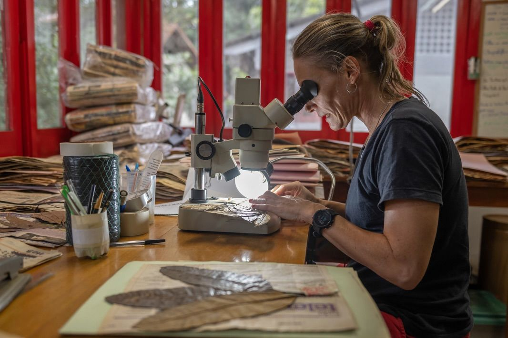

Pesquisa Interdisciplinar
Projetos ativos
Conheça as pesquisas em andamento no Projeto Dinâmica Biológica de Fragmentos Florestais.
Pesquisa Interdisciplinar
Pesquisas em andamento no PDBFF
86 projetos em andamento

Conheça as pesquisas em andamento no Projeto Dinâmica Biológica de Fragmentos Florestais.
86 projetos em andamento